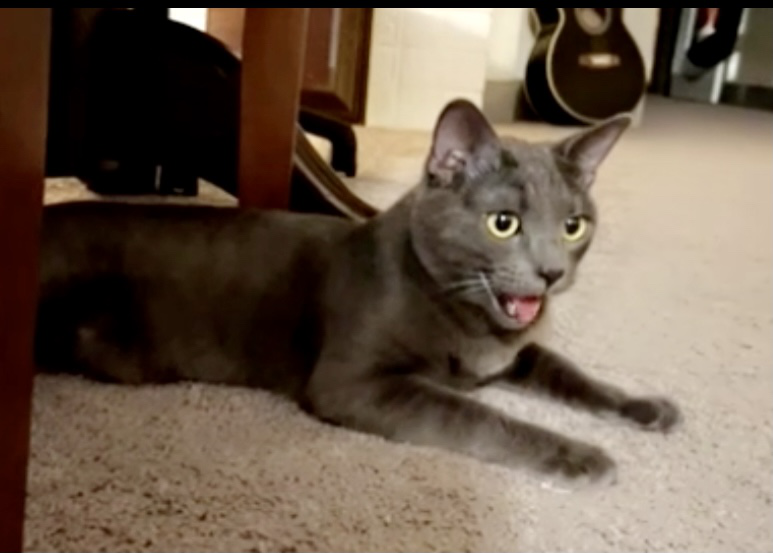

Onji is always looking for making new friends. Whenever he comes acrosee a neighborhood cat, neighbors or relatives, he will approach them and become friends fast. This is why, he has made so many friends. Due to his warm and affectionate personality, his human's landlord made an exception for the no pet policy.
Best Friend: Milo
 His best friend is Milo. Milo is a 6 year old cat. Unlike Onji, Milo has a different personality, he is a scaredy cat who dislikes other cats. Onji is the first cat that Milo has ever accepted as a friend. When Onji goes to visit Milo, they will be hanginh out at the same place in close proximity. Milo is also the first cat he has come across. That is why, Onji also looks up to Milo as a big brother.
His best friend is Milo. Milo is a 6 year old cat. Unlike Onji, Milo has a different personality, he is a scaredy cat who dislikes other cats. Onji is the first cat that Milo has ever accepted as a friend. When Onji goes to visit Milo, they will be hanginh out at the same place in close proximity. Milo is also the first cat he has come across. That is why, Onji also looks up to Milo as a big brother.
Little foster brother: Olly
 Onji was a good big foster brother to a tiny one week old kitten. The tiny kitten has grown up to be a healthy 5 months old kitten. His name is Olly. When Olly was taken under Onji's human's care, Onji helped his human to take care of the kitten. He groomed tiny Olly and kept him warm. Later when Olly was homed, Olly's humans visited Onji. They both remembered each other even after meeting months apart. They have a strong bond. Onji still looks out for Olly as a little brother.
Onji was a good big foster brother to a tiny one week old kitten. The tiny kitten has grown up to be a healthy 5 months old kitten. His name is Olly. When Olly was taken under Onji's human's care, Onji helped his human to take care of the kitten. He groomed tiny Olly and kept him warm. Later when Olly was homed, Olly's humans visited Onji. They both remembered each other even after meeting months apart. They have a strong bond. Onji still looks out for Olly as a little brother.
Nemesis: Gizmo
Although Onji is a friendly soul, there is this one cat that he does not get along with. His name is Gizmo. Gizmo and Onji are around the same age. In their first meeting, Gizmo hissed at Onji several times. Onji talked back initially but later on, he stopped trying to be friends with him because Gizmo did not wanted to be friends. Gizmo kept chasing Onji and trying to hit him. On the other hand, Onji instead of confronting Gizmo, he kept running away. It is because Onji does not like fighting. Their humans tried to make them friends but every time Gizmo misbehaved with Onji. So, Onji's humans decided not to try making them friends anymore.